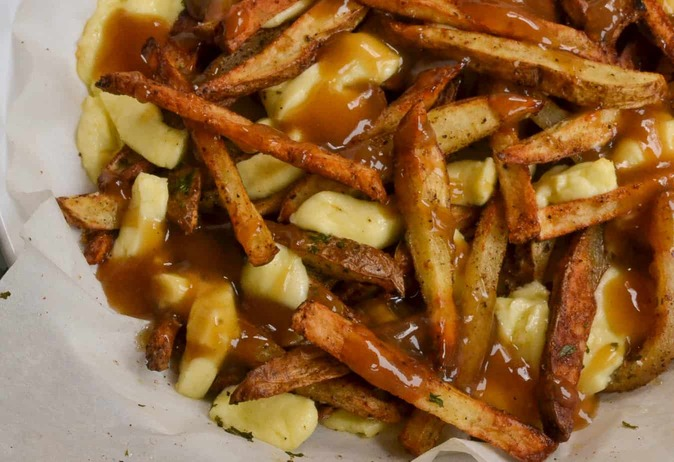

Grandma's Poutine

Ingredients
4 cups fresh-cut french-fried potatoes
homemade gravy
1/2 cup cheddar cheese curds
Directions
Deep fry the fries until crispy. Dry on paper towel, then plate.
Top with curds
Smother in gravy!